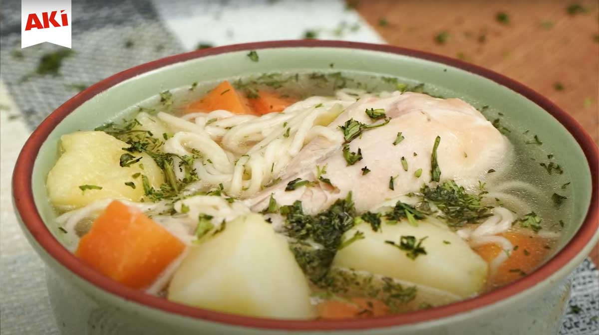

Home
Chicken Soup!
I am writing this recipe in honour of my grandmom Rosa!

Description
Ecuadorian chicken soup, or sopa de pollo, is a comforting and flavorful dish
that brings warmth to any meal. Made with fresh vegetables, tender chicken, and
traditional seasonings, it's a staple in many Ecuadorian homes. Often enjoyed
during lunch with rice, avocado, or a spicy ají, this soup is more than just
food—it's a taste of home and family tradition.
Ingredients
- 1 whole chicken (or chicken part, about 1.5 kg)
- 4 medium potatoes peeled, and chopped
- 2 carrots, peeled and sliced
- 1 onions, finely chopped
- 2 garlic gloves, minced
- 1 small bunch of cilantro
- Salt and pepper to taste
- 1 tablespoon extra virgin olive oil
- Water (about 2 liters)
Steps
- In a large pot, heat the oil and sauté the onion and garlic until fragrant.
- Add the chicken pieces and cook until lightly browned.
- Pour in the water and bring to a boil.
- Reduce heat and simmer for about 30 minutes, skimming off any foam.
- Add the potatoes and carrots. Cook until the vegetables are tender.
- (Optional) Stir in rice or noodles and cook until soft.
- Season with salt and pepper to taste.
- Garnish with chopped cilantro before serving, if desired.
- Serve hot, optionally with avocado slices and a touch of ají.